40 سؤال
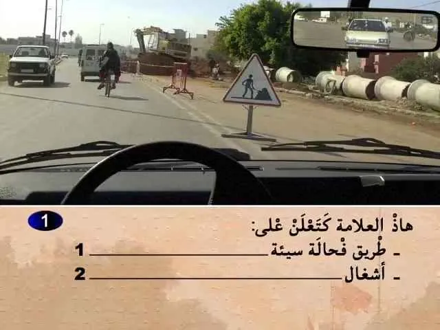
الجواب الصحيح: 2
كيف موضح فالصورة، فمقدمة الطريق كاينة أشغال، والعلامة الطرقية على جنب الطريق كتعني باللي كاينين أشغال طرقية.
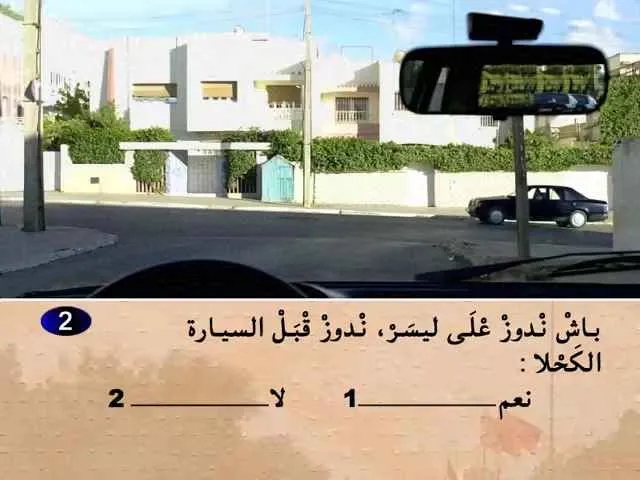
الجواب الصحيح: 2
كاينة طوموبيل جاية من جهة اليمين، فملتقيات الطرق ديما نعطيو حق الأسبقية للطوموبيلات الجاية من اليمين إذا ما كايناش علامات أو إشارات ضوئية كتنظم حركة السير، يعني غادي ندوز من بعد الطوموبيل ماشي قبل منها.
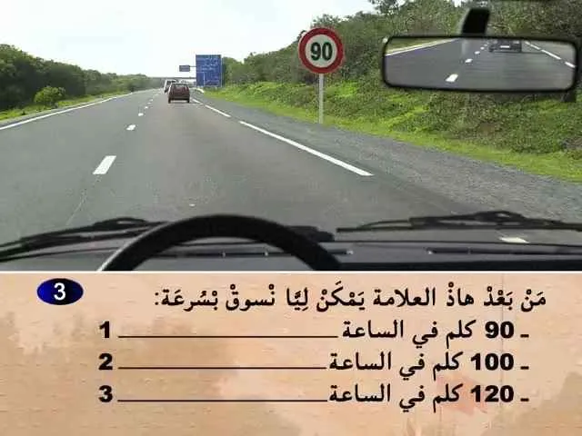
الجواب الصحيح: 1
حنا فطريق السيار، والسرعة القصوى هي 120 كلم في الساعة، ولكن كاينة علامة المنع، يعني خاصنا نلتازمو بيها ونسوقو بسرعة 90 كلم في الساعة أو أقل.
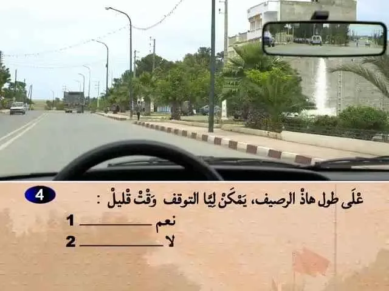
الجواب الصحيح: 2
بحيث الرصيف مصبوغ باللون الأبيض والأحمر، هاد الشي كيعني أن الوقوف مسموح ولكن التوقف غير مسموح.
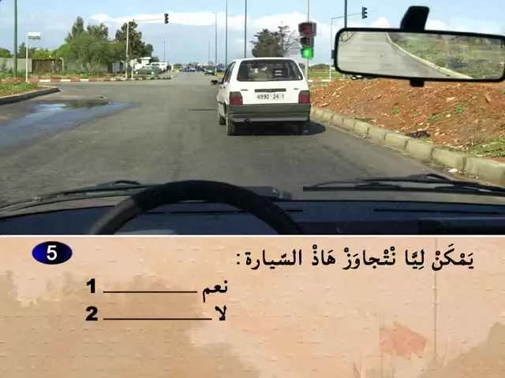
الجواب الصحيح: 1
الإشارة الضوئية خضرا كاتسمح ليا ندوز، حيث ما كايناش إشارات أفقية فالطريق كاتمنعني من التجاوز، يعني يمكنني نتجاوز الطوموبيل البيضاء.
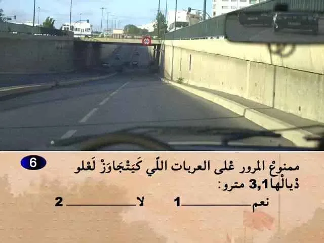
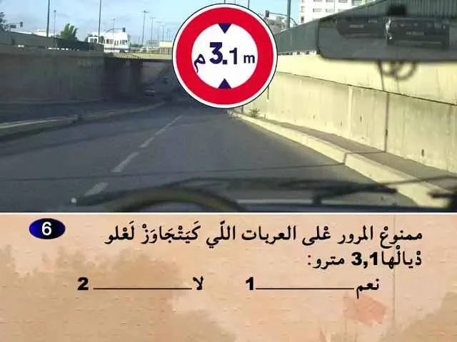
الجواب الصحيح: 1
العلامة كاتوضح أن ممنوع على العربات اللي ارتفاعها كثر من 3.1 متر المرور.
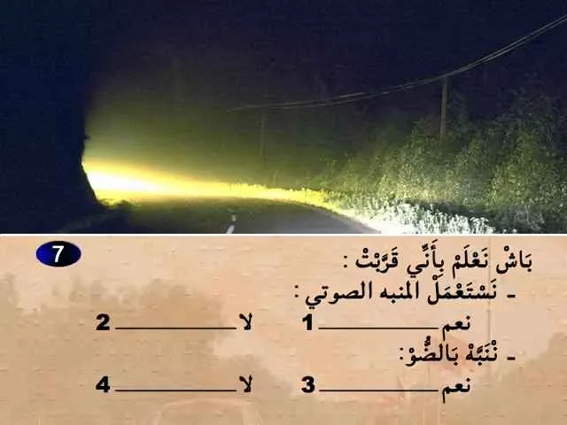
الجواب الصحيح: 2 و 3
حنا خارج المدينة والمنبه الصوتي مسموح، ولكن حيث احنا فالليل فماخصناش نستعملوه، وخاصني نبه بالضوء.
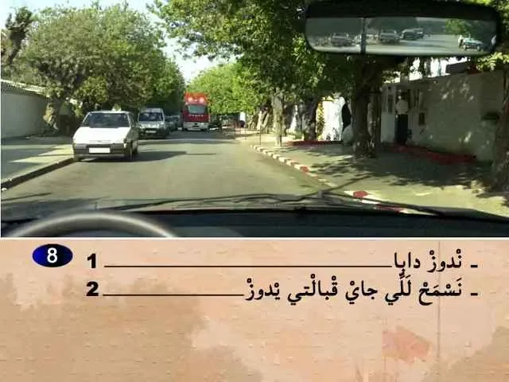
الجواب الصحيح: 2
البوليس أو سيارات الإسعاف أو رجال المطافئ عندهم ديما حق الأسبقية، يعني فهاد الحالة خاصني نسمح يدوزو.
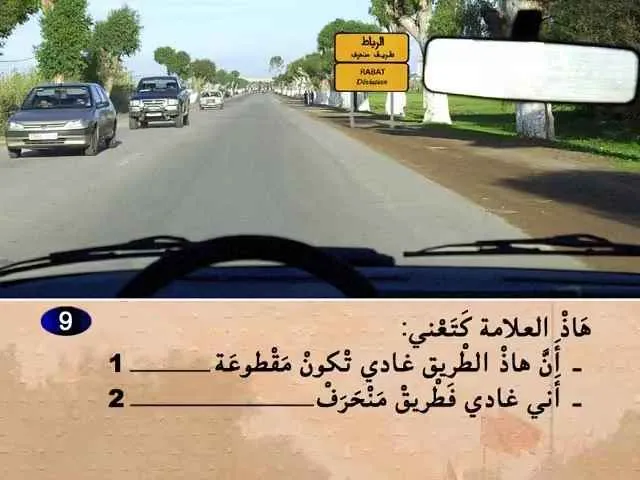
الجواب الصحيح: 2
العلامات الطرقية باللون الأصفر كتعني علامات مؤقتة، وكيف مكتوب فالعلمة، فراه الطريق منحرف.
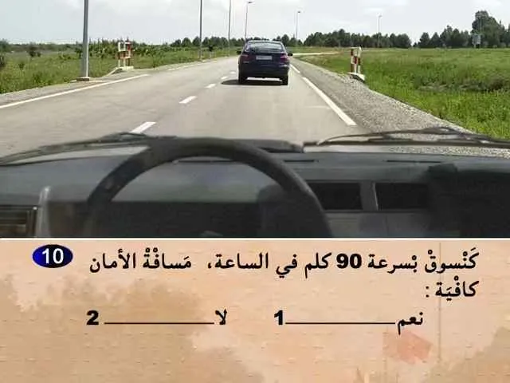
الجواب الصحيح: 2
مسافة الأمان هي المسافة اللي كاينة بيني وبين الطوموبيل اللي قدامي، والخط المتصل اللي على اليمين كيمثل 20 متر والفراغ بين الخطوط تقريبا 5 أمتار، يعني دابا بيني وبين الطوموبيل 25 متر تقريبا. و بحيث كنمشي بسرعة 90 كلم في الساعة فمسافة الأمان هي: 9 ضرب 6 = 54 متر، يعني المسافة غير كافية.
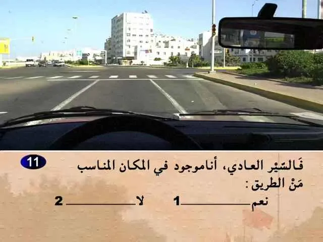
الجواب الصحيح: 2
أنا ما كاينش فالمكان المناسب فطريق السير العادي، بحيث فالسير العادي المسلك المناسب هو اللي على أقصى اليمين.
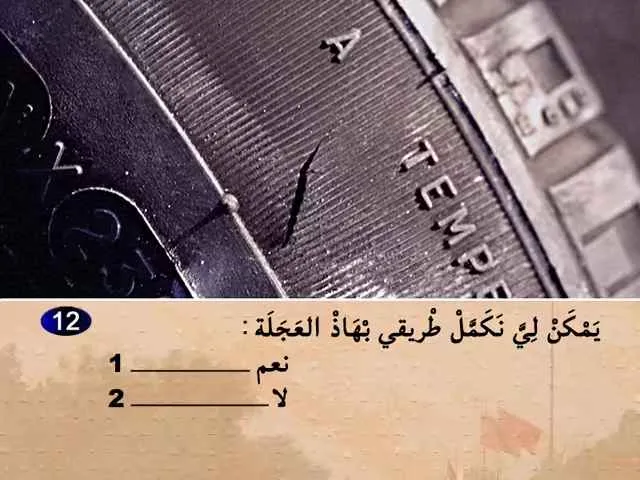
الجواب الصحيح: 2
كيف موضح فالصورة، العجلة في حالة غير جيدة، يعني ما يمكنش نكمل الطريق بها.
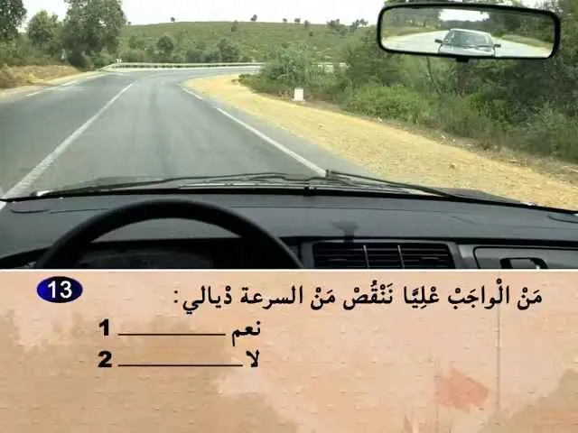
الجواب الصحيح: 1
فالمنعرجات الرؤية ما كتكونش واضحة، يعني خاصني ننقص من السرعة.
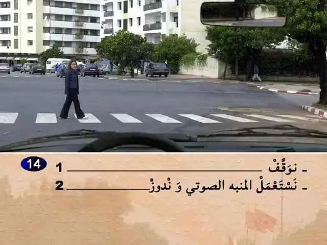
الجواب الصحيح: 1
واجب عليا نوقف بحيث كاينين راجلين فمسلك الراجلين، وممنوع نستعمل المنبه الصوتي حيث ممنوع داخل المدينة إلا فالحالات الضرورية وحالات الخطر.
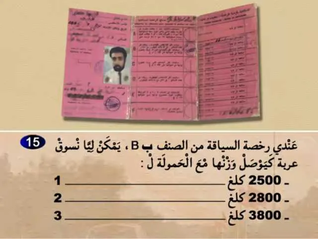
الجواب الصحيح: 1 و 2
رخصة السياقة صنف B كتسمح ليا نسوق عربة بوزن الحمولة حتى 3500 كلغ.
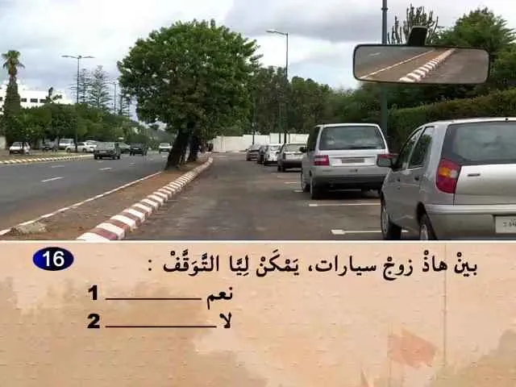
الجواب الصحيح: 1
كيف موضح فالصورة، المكان مناسب للتوقف وما كايناش أي علامة كاتمنعني من التوقف.
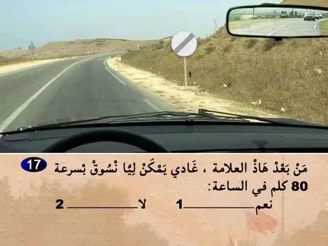
الجواب الصحيح: 1
العلامة الطرقية كتنهي المنع اللي كان من قبل، وبما أنها طريق وطنية والسرعة محددة فـ 100 كلم في الساعة، يعني يمكنني نسوق السيارة بسرعة 80 كلم في الساعة.
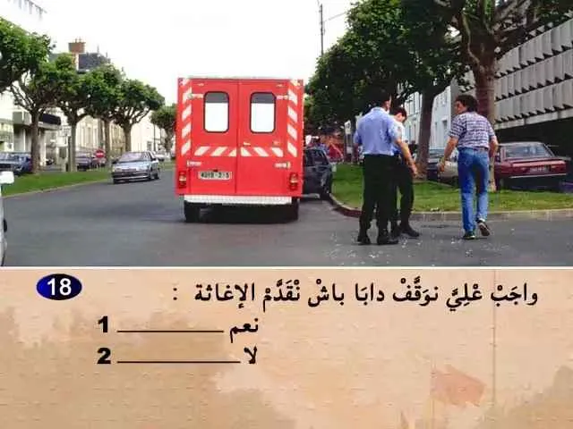
الجواب الصحيح: 2
ملي تكون سيارة الإسعاف في مكان الحادث، ما واجبش عليا نوقف باش نقدم الإغاثة.
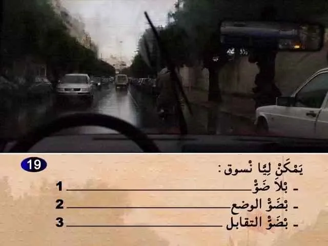
الجواب الصحيح: 3
الحالة الجوية ممطرة، فهاد الحالة يمكن لي نسوق بأضواء التقابل.
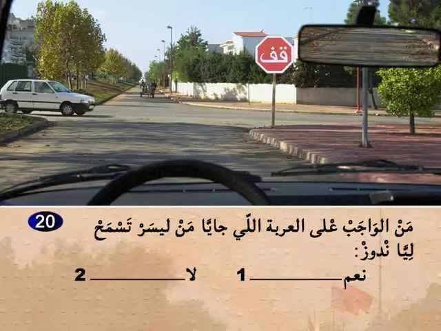
الجواب الصحيح: 2
فملتقى الطرق كاينة علامة طرقية كتلزمني نوقف ونعطي الأسبقية للسيارات الجاية من اليمين واليسار يمروا الأولين ومن بعد يمكنني نمر، يعني ما واجبش على الطوموبيل البيضاء تسمح لي بالمرور.
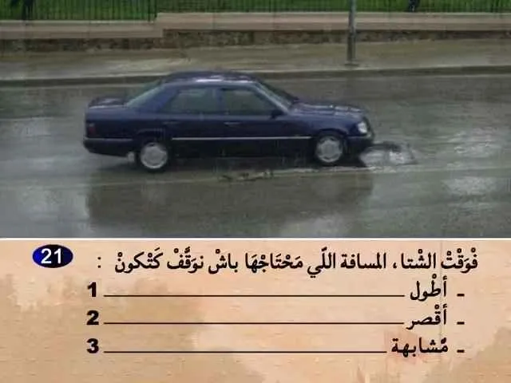
الجواب الصحيح: 1
فحالة الجو الماطر كيف موضح فالصورة، المسافة اللي خاصني باش نوقف كاتكون أطول حيت المطر كيخلي الطوموبيل تزلق شوية، يعني المسافة كاتكون أطول من اللي كاتكون فجو عادي.
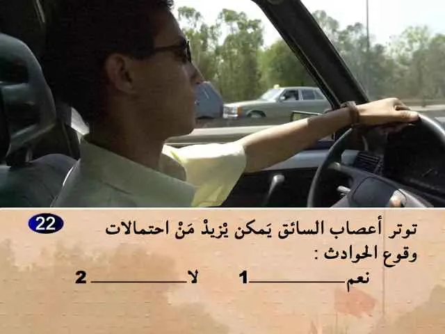
الجواب الصحيح: 1
بطبيعة الحال، ملي السائق يكون متوتر كيزيد احتمال وقوع الحوادث حيت كيخذ قرارات غير صائبة.
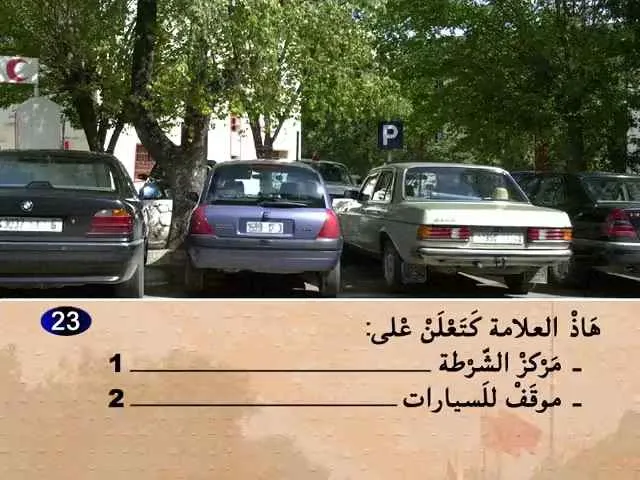
الجواب الصحيح: 2
العلامة اللي فيها P كتعني Parking يعني موقف سيارات ماشي مركز الشرطة.
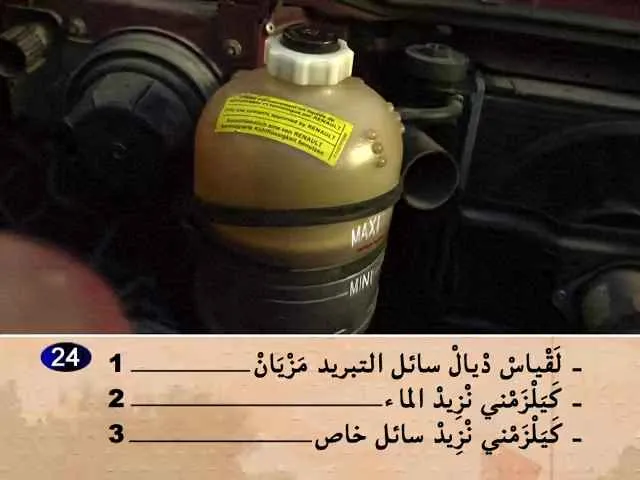
الجواب الصحيح: 1
القارورة ديال سائل التبريد فيها كلمة MAXI اللي كتعني الحد الأقصى وكلمة MINI اللي كتعني الحد الأدنى، وكما هو واضح فالصورة سائل التبريد فحد مناسب.
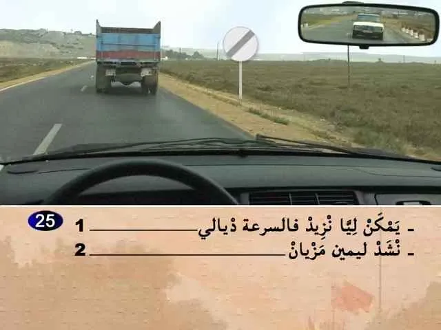
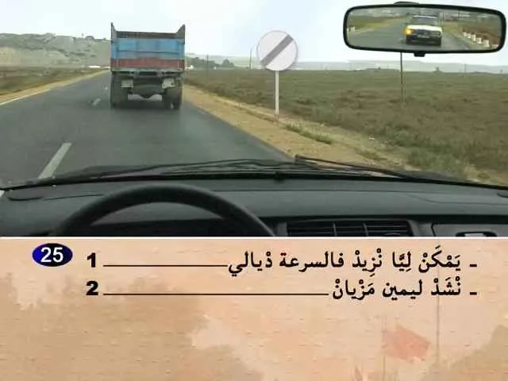
الجواب الصحيح: 2
كاينة طوموبيل كتحضر باش تدير التجاوز، فهاد الحالة خاصني نلتزم اليمين وما نزيدش فالسرعة باش نسهل عليها التجاوز.
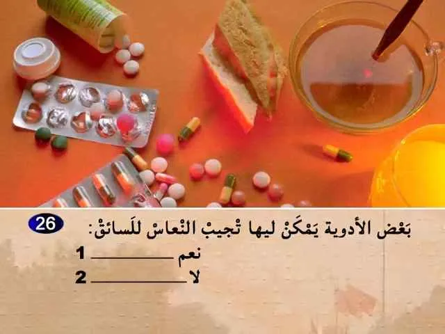
الجواب الصحيح: 1
كاينين بعض الأدوية اللي كتأثر على الإنسان وكتخليه يحس بالنعاس، يعني خاص الواحد ياخذ الحيطة والحذر ملي ياخذ الأدوية.
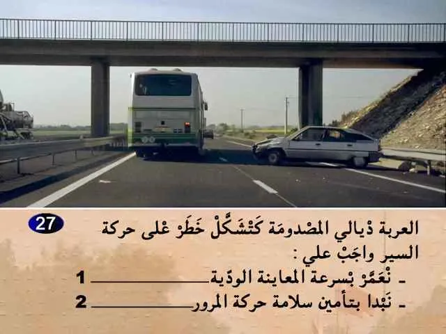
الجواب الصحيح: 2
أول حاجة من بعد أي حادثة طرقية، خاصني نبدا بتأمين سلامة حركة المرور باش ما تقعش حوادث أخرى.
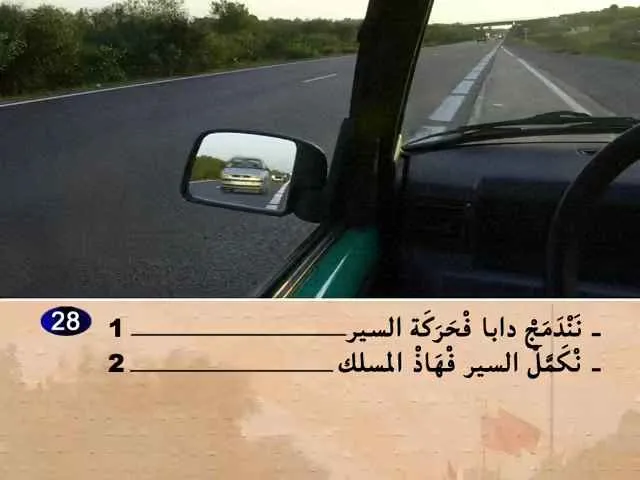
الجواب الصحيح: 2
فهاد الحالة حيث كاينين سيارات جاية، ما يمكنش نندمج في حركة السير باش ما تقعش حوادث، خاصني نكمل فهاد المسلك ومن بعد ما يدوزو السيارات يمكنني ندمج.
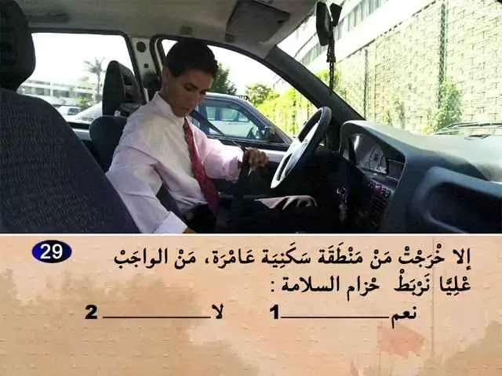
الجواب الصحيح: 1
حزام السلامة واجب عليا داخل أو خارج المدينة، ما كاينش فرق.
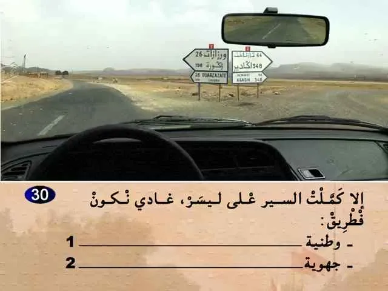
الجواب الصحيح: 1
كاينين علامات صغيرة فوق العلامات الطرقية باللون الأحمر وكتعني طريق وطنية.
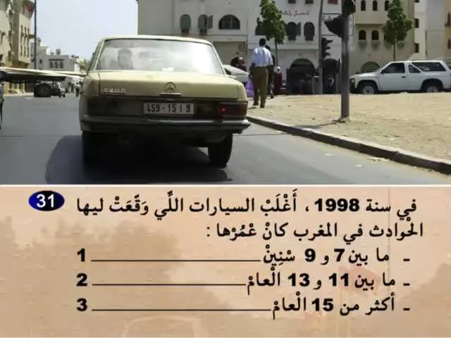
الجواب الصحيح: 3
إحصائيات فـ 1998 بينات أن أغلب السيارات اللي تسببوا في حوادث السير كان عمرها أكثر من 15 عام، وهدا شي عادي حيث الحالة الميكانيكية للسيارات ما كتبقاش مزيانة بعد مرور سنوات.
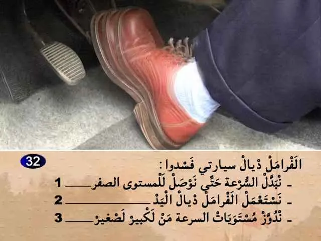
الجواب الصحيح: 2 و 3
إذا غيرت السرعة حتى نوصل للمستوى الصفر، الطوموبيل غتفقد الطاقة الحركية، لذلك الخبراء كيوصيو بتغيير السرعة من الكبير للصغير، ومن بعد استعمال الفرامل ديال اليد.
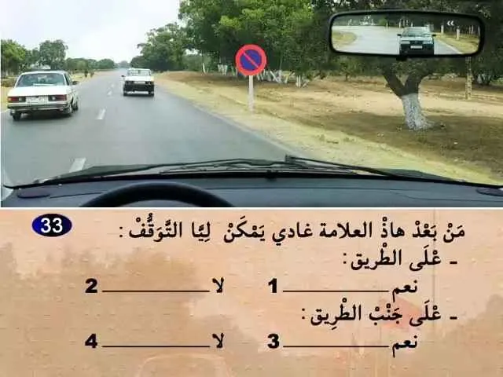
الجواب الصحيح: 2 و 4
العلامة الطرقية كتعني ممنوع التوقف نهائيا، يعني ما يمكنش نتوقف على الطريق ولا على جنب الطريق.
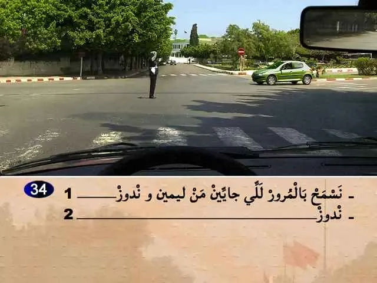
الجواب الصحيح: 2
كاين شرطي كينظم حركة السير، وحيث واقف جنبا وماشي قدامي مباشرة، يعني يمكنني ندوز.
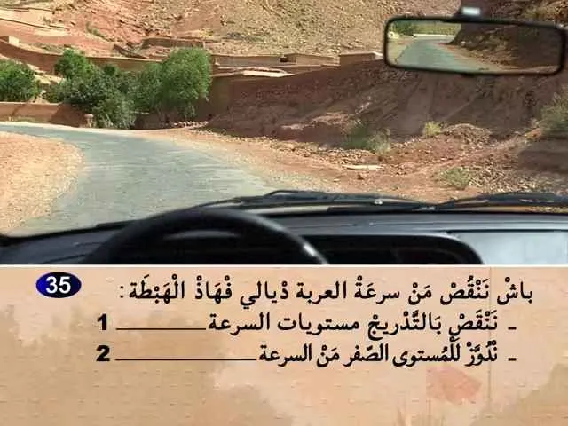
الجواب الصحيح: 1
فالمنحدر، خاصني ننقص بالتدريج من مستويات السرعة.
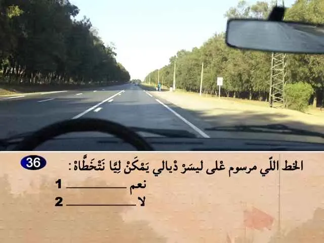
الجواب الصحيح: 1
الخطوط كتنظم عملية التجاوز، وأول خط على يساري هو خط متقطع ويمكنني نتخطاه يعني نتجاوز السيارات.
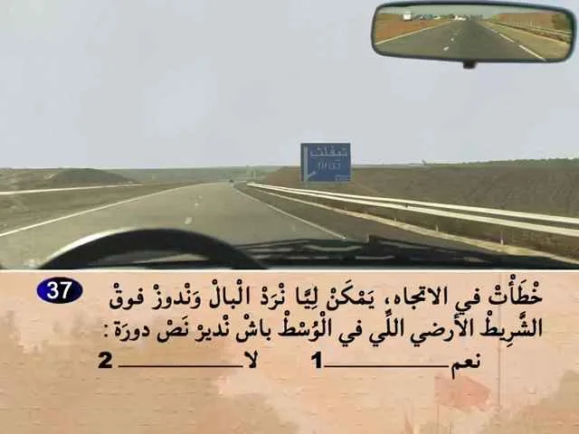
الجواب الصحيح: 2
فطريق السيار ممنوع السائق يدير نصف دورة.
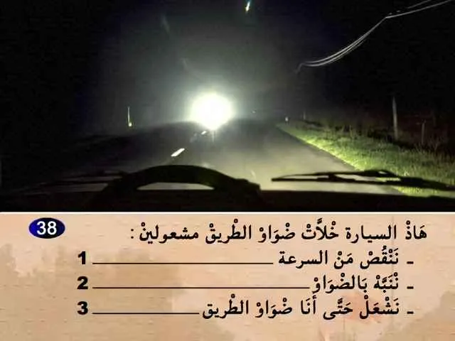
الجواب الصحيح: 1 و 2
فهاد الحالة خاصني ننقص من السرعة ونبه بالأضواء، وما خاصش نشعل أضواء الطريق.
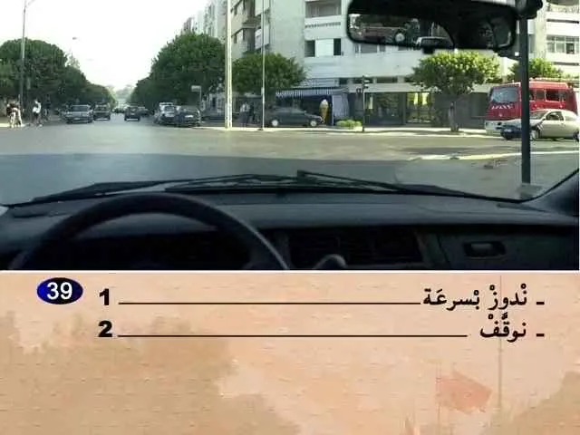
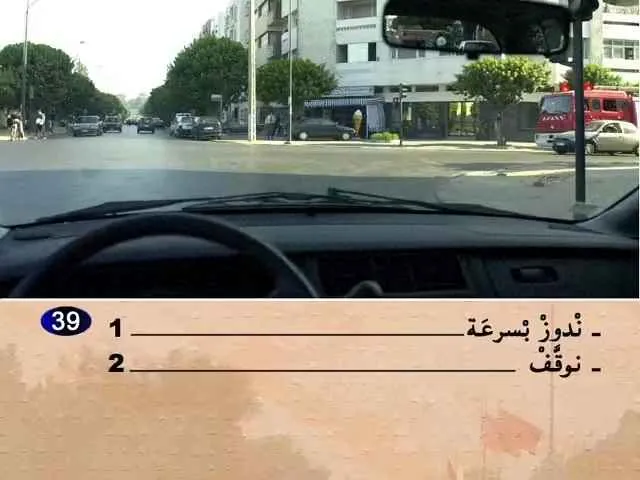
الجواب الصحيح: 2
البوليس أو سيارات الإسعاف أو رجال المطافئ عندهم ديما حق الأسبقية، يعني فهاد الحالة خاصني نوقف ونسمح يدوزو.
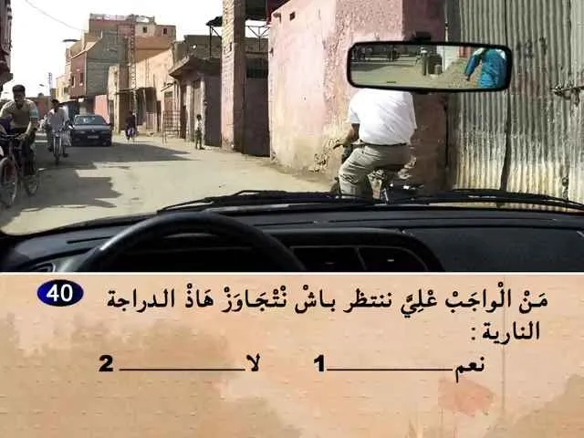
الجواب الصحيح: 1
الطريق ضيقة وكاينة طوموبيل جاية فطريق المقابل، فهاد الحالات خاصني نسوق فاليمين بشكل عادي باش نسهل حركة المرور ونستنى باش ندير عملية التجاوز.